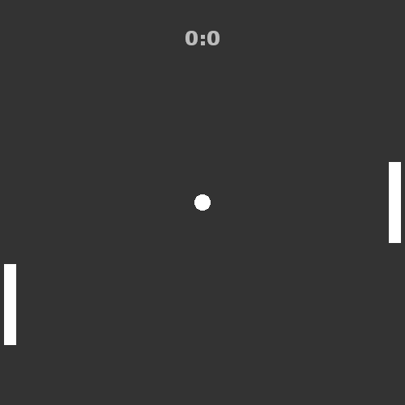

In this part we'll be creating a game loop and adding player-controller platform movement using arrow keys.
Our current keyboard event listener only handles KEY_DOWN events. For things like movement, you will usually want to move the object as long as the key is down, and stop the movement once the key is released.
This means that we will need to listen to both KEY_DOWN and KEY_UP events to add the "hold key to move" functionality. For this purpose, add 2 new variables:
private var arrowKeyUp:Bool;
private var arrowKeyDown:Bool;These values will be true as long as the keys are held, and false when they're not.
Add another variable, which will represent the movement speed of a platform:
private var platformSpeed:Int;Go to your init() function and set the default values to these variables. False for both booleans, and a numeric value for the speed, 7 in my case:
arrowKeyUp = false;
arrowKeyDown = false;
platformSpeed = 7;Add a new event listener to the end of init() function, this time listen to KEY_UP instead of KEY_DOWN:
stage.addEventListener(KeyboardEvent.KEY_UP, keyUp);Now let's update our existing keyDown event handler. We want to listen to 2 keys here - arrow up and arrow down. The key codes are 38 and 40 respectively. When we capture these key presses, we want to set the respective boolean values to true:
private function keyDown(event:KeyboardEvent):Void {
if (currentGameState == Paused && event.keyCode == 32) { // Space
setGameState(Playing);
}else if (event.keyCode == 38) { // Up
arrowKeyUp = true;
}else if (event.keyCode == 40) { // Down
arrowKeyDown = true;
}
}
Create a similar listener for key up event, listen to these two keys and set booleans to false:
private function keyUp(event:KeyboardEvent):Void {
if (event.keyCode == 38) { // Up
arrowKeyUp = false;
}else if (event.keyCode == 40) { // Down
arrowKeyDown = false;
}
}
A game loop is a function that is executed regularly to update game logic or graphics. With OpenFL, it is easy to just listen to an ENTER_FRAME event of a Sprite, which is called every frame. The frame rate (FPS) is set in application.xml file and is 60 by default in FlashDevelop.
Add a new event listener in the init() function. This time add the listener to the Main instance, instead of the stage. Use the "this" keyword for that:
this.addEventListener(Event.ENTER_FRAME, everyFrame);In the event handler function we want to first check whether the game state is Playing. If that's true, then check whether an arrow key is pressed, by looking at the boolean values. When the up key is pressed, decrease the y coordinate of the platform by your movement speed. If the down key is pressed, increase the coordinate instead.
This means that if, for example, your platform's movement speed is set to 7, the platform will move 7 pixels per frame up or down as long as a key is held.
We also want to add limits to how far can the platform go, this is done using simple if statements. We end up with something like this:
private function everyFrame(event:Event):Void {
if(currentGameState == Playing){
if (arrowKeyUp) {
platform1.y -= platformSpeed;
}
if (arrowKeyDown) {
platform1.y += platformSpeed;
}
if (platform1.y < 5) platform1.y = 5;
if (platform1.y > 395) platform1.y = 395;
}
}
Let's also update our setGameState() function by adding lines that will reset the platforms' vertical location:
private function setGameState(state:GameState):Void {
currentGameState = state;
updateScore();
if (state == Paused) {
messageField.alpha = 1;
}else {
messageField.alpha = 0;
platform1.y = 200;
platform2.y = 200;
}
}
When that's done, if you run the game, you'll be able to move one platform using the up and down arrow keys after the game is started.
The full Main.hx code should look like this:
package ;
import openfl.display.Sprite;
import openfl.events.Event;
import openfl.Lib;
import openfl.events.KeyboardEvent;
import openfl.text.TextField;
import openfl.text.TextFormat;
import openfl.text.TextFormatAlign;
enum GameState {
Paused;
Playing;
}
class Main extends Sprite
{
var inited:Bool;
private var platform1:Platform;
private var platform2:Platform;
private var ball:Ball;
private var scorePlayer:Int;
private var scoreAI:Int;
private var scoreField:TextField;
private var messageField:TextField;
private var currentGameState:GameState;
private var arrowKeyUp:Bool;
private var arrowKeyDown:Bool;
private var platformSpeed:Int;
/* ENTRY POINT */
function resize(e)
{
if (!inited) init();
// else (resize or orientation change)
}
function init()
{
if (inited) return;
inited = true;
platform1 = new Platform();
platform1.x = 5;
platform1.y = 200;
this.addChild(platform1);
platform2 = new Platform();
platform2.x = 480;
platform2.y = 200;
this.addChild(platform2);
ball = new Ball();
ball.x = 250;
ball.y = 250;
this.addChild(ball);
var scoreFormat:TextFormat = new TextFormat("Verdana", 24, 0xbbbbbb, true);
scoreFormat.align = TextFormatAlign.CENTER;
scoreField = new TextField();
addChild(scoreField);
scoreField.width = 500;
scoreField.y = 30;
scoreField.defaultTextFormat = scoreFormat;
scoreField.selectable = false;
var messageFormat:TextFormat = new TextFormat("Verdana", 18, 0xbbbbbb, true);
messageFormat.align = TextFormatAlign.CENTER;
messageField = new TextField();
addChild(messageField);
messageField.width = 500;
messageField.y = 450;
messageField.defaultTextFormat = messageFormat;
messageField.selectable = false;
messageField.text = "Press SPACE to start\nUse ARROW KEYS to move your platform";
scorePlayer = 0;
scoreAI = 0;
arrowKeyUp = false;
arrowKeyDown = false;
platformSpeed = 7;
setGameState(Paused);
stage.addEventListener(KeyboardEvent.KEY_DOWN, keyDown);
stage.addEventListener(KeyboardEvent.KEY_UP, keyUp);
this.addEventListener(Event.ENTER_FRAME, everyFrame);
}
private function setGameState(state:GameState):Void {
currentGameState = state;
updateScore();
if (state == Paused) {
messageField.alpha = 1;
}else {
messageField.alpha = 0;
platform1.y = 200;
platform2.y = 200;
}
}
private function keyDown(event:KeyboardEvent):Void {
if (currentGameState == Paused && event.keyCode == 32) { // Space
setGameState(Playing);
}else if (event.keyCode == 38) { // Up
arrowKeyUp = true;
}else if (event.keyCode == 40) { // Down
arrowKeyDown = true;
}
}
private function keyUp(event:KeyboardEvent):Void {
if (event.keyCode == 38) { // Up
arrowKeyUp = false;
}else if (event.keyCode == 40) { // Down
arrowKeyDown = false;
}
}
private function everyFrame(event:Event):Void {
if(currentGameState == Playing){
if (arrowKeyUp) {
platform1.y -= platformSpeed;
}
if (arrowKeyDown) {
platform1.y += platformSpeed;
}
if (platform1.y < 5) platform1.y = 5;
if (platform1.y > 395) platform1.y = 395;
}
}
private function updateScore():Void {
scoreField.text = scorePlayer + ":" + scoreAI;
}
/* SETUP */
public function new()
{
super();
addEventListener(Event.ADDED_TO_STAGE, added);
}
function added(e)
{
removeEventListener(Event.ADDED_TO_STAGE, added);
stage.addEventListener(Event.RESIZE, resize);
#if ios
haxe.Timer.delay(init, 100); // iOS 6
#else
init();
#end
}
public static function main()
{
// static entry point
Lib.current.stage.align = openfl.display.StageAlign.TOP_LEFT;
Lib.current.stage.scaleMode = openfl.display.StageScaleMode.NO_SCALE;
Lib.current.addChild(new Main());
//
}
}
Next time we will add ball movement.